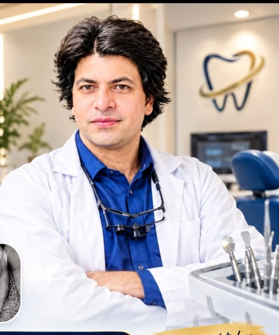

Expert dental care for a healthy, confident smile.
Comprehensive dental, endodontic, orthodontic, and oral surgery treatments by Dr. Muhammad Siraj (BDS, RDS) with modern equipment and same-week appointments in Timergara.


Experienced Dental & Oral Surgeon in Timergara
Dr. Muhammad Siraj is a qualified Dental and Oral Surgeon (BDS, AMC · RDS, PAK) with specialized certifications in Endodontics (C-Endo) and Orthodontics (C-Ortho). Dedicated to gentle, pain-free dentistry, he provides complete oral healthcare, root canal therapy, braces, and surgical dental procedures at Shifa Hospital, Opposite DHQ Hospital, Timergara, Dir Lower.
Dental & Oral Surgery Services
Complete oral diagnosis and painless dental treatment in Timergara, planned around you.
General Dental Check-up
Complete oral examination, toothache relief, and personalized preventive care plans.
Book on WhatsAppRoot Canal (Endodontics)
Painless single and multi-visit root canal treatments to save infected or damaged teeth.
Book on WhatsAppBraces & Orthodontics
Teeth straightening, gap closure, and bite correction for children, teens, and adults.
Book on WhatsAppOral & Wisdom Tooth Surgery
Safe, painless tooth extractions, impacted wisdom teeth removal, and minor oral surgeries.
Book on WhatsAppScaling & Teeth Whitening
Ultrasonic tartar removal, gum treatment, and cosmetic polishing for a brighter smile.
Book on WhatsAppCrowns, Bridges & Fillings
Tooth-colored composite fillings, durable zirconia crowns, and replacements for missing teeth.
Book on WhatsAppClinic timings and locations
Visit Dr. Muhammad Siraj Dental Clinic in Timergara, Dir Lower.
Dr. Muhammad Siraj Dental Clinic
📍 Shifa Hospital, Opposite DHQ Hospital, Timergara, Dir Lower
🕔 Mon – Sun: 9:00 am - 6:00 pm (Friday Off)
📞 0320-3606006
Book on WhatsApp Get directionsOpening Hours
✅ Monday – Sunday: 9:00 am – 6:00 pm
❌ Friday: Closed (Weekly Off)
💬 Walk-in patients are welcome during clinic hours, or tap below to message/call on WhatsApp.
Chat on WhatsAppWhat patients say
★★★★★
"He listened carefully and explained the whole dental procedure clearly."
Verified Patient — Timergara★★★★★
"Completely painless root canal treatment and a very clean clinic. Highly recommended."
Verified Patient — Dir Lower★★★★★
"Short waiting time and a very gentle, caring dental surgeon."
Verified Patient — TimergaraCommon questions
Do I need an appointment?
Appointments are recommended so you wait less, but walk-in patients are seen during clinic hours (Monday to Sunday, 9:00 am – 6:00 pm; Friday closed).
What should I bring?
Bring any previous dental X-rays, prescriptions, and a list of the medicines you currently take.
How do I get my appointment confirmed?
Tap any "Book on WhatsApp" button to send a text or voice message directly, or call us at 0320-3606006 to confirm your visit.
Book an appointment
Tap below to message or send a voice note on WhatsApp, call directly, or send an SMS.